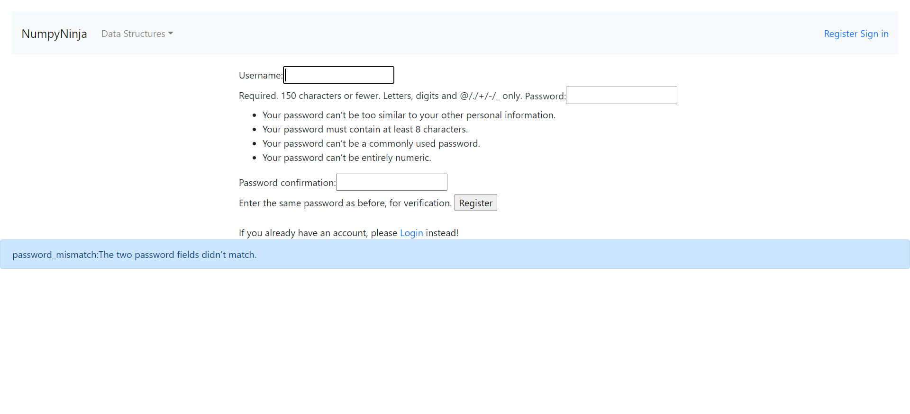

-
To ensure the browser open up with DS-Algo "Get Started" page
5:05:22 PM / 00:00:07:539 Pass
To ensure the browser open up with DS-Algo "Get Started" page
05.04.2023 5:05:22 PM 05.04.2023 5:05:30 PM 00:00:07:539 · #test-id=1and clicking on Get Started button takes to home page.PassThe user should be able to open the Ds-Algo portal home pageGiven The user opens DS Algo portal linkWhen The user clicks the "Get Started" buttonThen The user should be redirected to homepagePassUser is on Home page and click getstarted button on home page without sign inPassUser is on Home page and click getstarted button on home page without sign inGiven The user is in Home pageWhen The user clicks on Get Started button on homepage "Datastructures" without loginThen The user get warning message "You are not logged in"PassUser is on Home page and click getstarted button on home page without sign inGiven The user is in Home pageWhen The user clicks on Get Started button on homepage "Arrays" without loginThen The user get warning message "You are not logged in"PassUser is on Home page and click getstarted button on home page without sign inGiven The user is in Home pageWhen The user clicks on Get Started button on homepage "Linkedlist" without loginThen The user get warning message "You are not logged in"PassUser is on Home page and click getstarted button on home page without sign inGiven The user is in Home pageWhen The user clicks on Get Started button on homepage "Stack" without loginThen The user get warning message "You are not logged in"PassUser is on Home page and click getstarted button on home page without sign inGiven The user is in Home pageWhen The user clicks on Get Started button on homepage "Queue" without loginThen The user get warning message "You are not logged in"PassUser is on Home page and click getstarted button on home page without sign inGiven The user is in Home pageWhen The user clicks on Get Started button on homepage "Tree" without loginThen The user get warning message "You are not logged in"PassUser is on Home page and click getstarted button on home page without sign inGiven The user is in Home pageWhen The user clicks on Get Started button on homepage "Graph" without loginThen The user get warning message "You are not logged in"PassUser is on Home page and click on dropdown without sign inGiven The user is on Home pageWhen The user clicks on dropdown options without loginThen The user gets warning message "You are not logged in"PassUser is on Home page and click on sign inGiven The user opens Home PageWhen The user clicks Sign in linkThen The user should be redirected to Sign in pagePassUser is on Home page and click on RegisterGiven The user gets on Home PageWhen The user clicks on Register linkThen The user should be redirected to Register form -
Register
5:05:30 PM / 00:00:09:052 Fail
Register
05.04.2023 5:05:30 PM 05.04.2023 5:05:39 PM 00:00:09:052 · #test-id=102PassNavigating to register page from ds-algo portalGiven User launches ds-algo portal linkWhen User clicks on get started buttonAnd Clicks on Register linkThen User should be successfully navigated to Register pagePassNavigating to Login page from Register pageGiven User launches Register pageWhen User clicks on Login linkThen User should be successfully navigated to Login pageFailSuccessful registration with valid username and passwordGiven User launches Register pageWhen User enter valid username, password and password confirmationutest_sdet00 temp12!@ temp12!@ And Clicks on the Register buttonThen User should be able successfully registered with the success message "New Account Created."appHooks.Hooks.tearDown(io.cucumber.java.Scenario)Successful registration with valid username and passwordPassValidating registration with empty fieldsGiven User launches Register pageWhen User clicks on Register button without entering Username, password and confirm password fieldsThen User should see a pop-up text below Username field "Please fill out this field."PassValidating registration with valid username and empty password fieldPassValidating registration with valid username and empty password fieldGiven User launches Register pageWhen User clicks on Register button entering valid "utest_sdet" and empty password fieldThen User should see a pop-up text under password field "Please fill out this field."PassValidating registration with valid username, Password and empty password confirmation fieldPassValidating registration with valid username, Password and empty password confirmation fieldGiven User launches Register pageWhen User clicks on Register button entering valid "utest_sdet", "temp12!@" and empty password confirmation fieldThen User should see a pop-up text under password confirmation field "Please fill out this field."PassValidate password mismatchPassValidate password mismatchGiven User launches Register pageWhen User clicks on Register button entering valid "utest_sdet","temp12!@" and mismatch password in "test1212" fieldsThen User should see the error message "password_mismatch:The two password fields didn’t match."PassValidating registration with valid Password, Password confirmation field and empty Username fieldGiven User launches Register pageWhen User clicks on Register button entering valid password, password confirmation field and empty Username fieldpassword password confirmation temp1212 temp1212 Then User should see a pop-up text under username field "Please fill out this field." -
SignIn Functionality
5:05:39 PM / 00:00:15:775 Pass
SignIn Functionality
05.04.2023 5:05:39 PM 05.04.2023 5:05:55 PM 00:00:15:775 · #test-id=182PassNavigating to Login Page from ds algo portalGiven User launches ds algo portalWhen User clicks on Get Started button and clicks on SignIn linkThen User should be navigated to the login pagePassValidating Login with valid and invalid credentialsPassValidating Login with valid and invalid credentialsGiven User launches login pageWhen User enters valid and invalid "login" and 1Then User clicks on Login buttonPassValidating Login with valid and invalid credentialsGiven User launches login pageWhen User enters valid and invalid "login" and 2Then User clicks on Login buttonPassValidating Login with valid and invalid credentialsGiven User launches login pageWhen User enters valid and invalid "login" and 3Then User clicks on Login buttonPassValidating Login with either of the password and username fields emptyPassValidating Login with either of the password and username fields emptyGiven User launches login pageWhen User wihout entering either "user_sdet00" and "" fieldThen Clicks on Login buttonPassValidating Login with either of the password and username fields emptyGiven User launches login pageWhen User wihout entering either "" and "temp12!@" fieldThen Clicks on Login buttonPassValidating signoutGiven User launches login pageWhen User enters valid username and password and clicks on Signout linkThen user should be logged out successfully with message "Logged out successfully" -
Data Structruce feature
5:05:55 PM / 00:00:12:396 Pass
Data Structruce feature
05.04.2023 5:05:55 PM 05.04.2023 5:06:07 PM 00:00:12:396 · #test-id=248PassValidating the Data Structure Introduction page featureGiven The user is on Signin page of DS Algo portalWhen The user enter valid username "utest_sdet00" and password "temp12!@"Then The user clicks on login buttonWhen User clicks on Get Started button inside Data Structure frameThen User should be navigated to Data Structures Introduction pageWhen User clicks on the Time Complexity link in DS home pageThen User should be navigated to Time Complexity pageWhen User clicks on Try here buttonThen User should be successfully navigated to Try Editor pageWhen User enters valid python codeprint("Data Structures Introduction") Then User should see the valid "output"When User enters invalid python codeprint Data Structures Introduction Then User should get the error pop up alert -
Array
5:06:08 PM / 00:00:39:440 Pass
Array
05.04.2023 5:06:08 PM 05.04.2023 5:06:47 PM 00:00:39:440 · #test-id=278PassValidate Array pageGiven User is logged in to HomePageWhen User clicks on Get Started button on Array panelThen User is navigated to the Array pagePassValidate 'Arrays in Python' linkGiven User is in Array pageWhen User clicks on Arrays in Python linkThen User is navigated to the Arrays in Python pagePassValidate 'Arrays Using List' linkGiven User is in Array pageWhen User clicks on the Array Using List linkThen User is navigated to the Arrays using list pagePassValidate 'Basic Operations in List' linkGiven User is in Array pageWhen User clicks on the Basic Operations in List linkThen User is navigated to the Basic operations in list pagePassValidate 'Applications of Array' linkGiven User is in Array pageWhen User clicks on the Applications of array linkThen User is navigated to the Applications of array pagePassValidate python code for Arrays in Python TryEditorPassValidate python code for Arrays in Python TryEditorGiven User is in Arrays in Python pageWhen User clicks on the Try Here buttonThen User is navigated to the page with title "Assessment"When User enters valid Python code in Try Editor from "pythoncode" and 1And Clicks on the Run buttonThen Valid output for TryEditor is displayedAnd User navigates backPassValidation invalid python code for Arrays in Python TryEditorPassValidation invalid python code for Arrays in Python TryEditorGiven User is on Try Editor PageWhen User enters invalid Python code from sheet "pythoncode" and 2And Clicks on the Run buttonThen User should be able to see error messageAnd User navigates backPassValidate python code for Arrays using List TryEditorPassValidate python code for Arrays using List TryEditorGiven User is in Arrays using List pageWhen User clicks on the Try Here buttonThen User is navigated to the page with title "Assessment"When User enters valid Python code in Try Editor from "pythoncode" and 1And Clicks on the Run buttonThen Valid output for TryEditor is displayedAnd User navigates backPassValidation invalid python code for Arrays using List TryEditorPassValidation invalid python code for Arrays using List TryEditorGiven User is in Arrays using List pageWhen User clicks on the Try Here buttonThen User is navigated to the page with title "Assessment"When User enters invalid Python code from sheet "pythoncode" and 2And Clicks on the Run buttonThen User should be able to see error messageAnd User navigates backPassValidate python code for Basic Operations in List TryEditorPassValidate python code for Basic Operations in List TryEditorGiven User is in Basic operations in List pageWhen User clicks on the Try Here buttonThen User is navigated to the page with title "Assessment"When User enters valid Python code in Try Editor from "pythoncode" and 1And Clicks on the Run buttonThen Valid output for TryEditor is displayedAnd User navigates backPassValidation invalid python code for Basic operations in List TryEditorPassValidation invalid python code for Basic operations in List TryEditorGiven User is in Basic operations in List pageWhen User clicks on the Try Here buttonThen User is navigated to the page with title "Assessment"When User enters invalid Python code from sheet "pythoncode" and 2And Clicks on the Run buttonThen User should be able to see error messageAnd User navigates backPassValidate python code for Applications of Array TryEditorPassValidate python code for Applications of Array TryEditorGiven User is in Applications of Array pageWhen User clicks on the Try Here buttonThen User is navigated to the page with title "Assessment"When User enters valid Python code in Try Editor from "pythoncode" and 1And Clicks on the Run buttonThen Valid output for TryEditor is displayedAnd User navigates backPassValidation invalid python code for Applications of Array TryEditorPassValidation invalid python code for Applications of Array TryEditorGiven User is in Applications of Array pageWhen User clicks on the Try Here buttonThen User is navigated to the page with title "Assessment"When User enters invalid Python code from sheet "pythoncode" and 2And Clicks on the Run buttonThen User should be able to see error messageAnd User navigates backPassValidate 'Practice Questions' linkGiven User is in Applications of Array pageWhen User clicks on the Practice Questions linkThen User is navigated to the Practice Questions pagePassValidate TryEditor for 'Search for array' in Practice QuestionsPassValidate TryEditor for 'Search for array' in Practice QuestionsGiven User is in practice questions pageWhen User clicks on Search the Array linkWhen User enters valid python practice code from "pythoncode" and 9And Clicks on the Run buttonThen Valid output for TryEditor is displayedPassValidate TryEditor for 'Max consecutive ones' in Practice QuestionsPassValidate TryEditor for 'Max consecutive ones' in Practice QuestionsGiven User is in practice questions pageWhen User clicks on Max consecutive ones linkWhen User enters valid python practice code from "PythonCode" and 10And Clicks on the Run buttonThen Valid output for TryEditor is displayedAnd User navigates backPassValidate TryEditor for 'Find Numbers with Even number of digits' in Practice QuestionsPassValidate TryEditor for 'Find Numbers with Even number of digits' in Practice QuestionsGiven User is in practice questions pageWhen User clicks on Even no of digits linkWhen User enters valid python practice code from "PythonCode" and 11And Clicks on the Run buttonThen Valid output for TryEditor is displayedAnd User navigates backPassValidate TryEditor for 'Squares of a sorted array' in Practice QuestionsPassValidate TryEditor for 'Squares of a sorted array' in Practice QuestionsGiven User is in practice questions pageWhen User clicks on Squares of a sorted array linkWhen User enters valid python practice code from "PythonCode" and 12And Clicks on the Run buttonThen Valid output for TryEditor is displayedAnd User navigates back -
Vadilating the LinkedList page and its features
5:06:47 PM / 00:00:35:942 Pass
Vadilating the LinkedList page and its features
05.04.2023 5:06:47 PM 05.04.2023 5:07:23 PM 00:00:35:942 · #test-id=535PassValidating the Linked List page featuresWhen User clicks on the Get Started button inside LinkedList frameThen User should be navigated to Linked List home pageWhen User clicks on the Introduction linkThen user should be navigated to Linked lists introduction pageWhen User clicks on the Try Here buttonThen User should be navigated to Try Editor pagePassVerifying valid code in the text editor - Intro pagePassVerifying valid code in the text editor - Intro pageWhen User enters a valid python code from sheet "pythoncode" and 1Then User should get an valid outputPassVerifying invalid code in the text editor - Intro pagePassVerifying invalid code in the text editor - Intro pageWhen User enter an invalid python code from sheet "pythoncode" and 2Then User should get an popup alertPassValidating Creating Linked List link and its featuresWhen User clicks on the Creating Linked List linkThen user should be navigated to Creating Linked List pageWhen User clicks on the Try Here buttonThen User should be navigated to Try Editor pagePassVerifying valid code in the text editor in Creating Linked List - pagePassVerifying valid code in the text editor in Creating Linked List - pageWhen User enters a valid python code from sheet "pythoncode" and 1Then User should get an valid outputPassVerifying invalid code in the text editor in Creating Linked List - pagePassVerifying invalid code in the text editor in Creating Linked List - pageWhen User enter an invalid python code from sheet "pythoncode" and 2Then User should get an popup alertPassValidating Types of Linked List link and its featuresWhen User clicks on the Types of Linked List linkThen User should be navigated to Types of Linked ListWhen User clicks on the Try Here buttonThen User should be navigated to Try Editor pagePassVerifying valid code in the text editor in Types of Linked List - pagePassVerifying valid code in the text editor in Types of Linked List - pageWhen User enters a valid python code from sheet "pythoncode" and 1Then User should get an valid outputPassVerifying invalid code in the text editor in Types of Linked List - pagePassVerifying invalid code in the text editor in Types of Linked List - pageWhen User enter an invalid python code from sheet "pythoncode" and 2Then User should get an popup alertPassValidating Implement Linked List in Python link and its featuresWhen User clicks on Implement Linked List in Python linkThen User should be navigated to Implement Linked List in Python pageWhen User clicks on the Try Here buttonThen User should be navigated to Try Editor pagePassVerifying valid code in the text editor in Implement Linked List in Python pagePassVerifying valid code in the text editor in Implement Linked List in Python pageWhen User enters a valid python code from sheet "pythoncode" and 1Then User should get an valid outputPassVerifying invalid code in the text editor in Implement Linked List in Python pagePassVerifying invalid code in the text editor in Implement Linked List in Python pageWhen User enter an invalid python code from sheet "pythoncode" and 2Then User should get an popup alertPassValidating Traversal link and its featuresWhen User clicks on the Traversal linkThen User should be navigated to Traversal pageWhen User clicks on the Try Here buttonThen User should be navigated to Try Editor pagePassVerifying valid code in the text editor in Traversal pagePassVerifying valid code in the text editor in Traversal pageWhen User enters a valid python code from sheet "pythoncode" and 1Then User should get an valid outputPassVerifying invalid code in the text editor in Traversal pagePassVerifying invalid code in the text editor in Traversal pageWhen User enter an invalid python code from sheet "pythoncode" and 2Then User should get an popup alertPassValidating Insertion link and its featuresWhen User clicks on the Insertion linkThen User should be navigated to Insertion pageWhen User clicks on the Try Here buttonThen User should be navigated to Try Editor pagePassVerifying valid code in the text editor in Insertion pagePassVerifying valid code in the text editor in Insertion pageWhen User enters a valid python code from sheet "pythoncode" and 1Then User should get an valid outputPassVerifying invalid code in the text editor in Insertion pagePassVerifying invalid code in the text editor in Insertion pageWhen User enter an invalid python code from sheet "pythoncode" and 2Then User should get an popup alertPassValidating Deletion link and its featuresWhen User clicks on the Deletion linkThen User should be navigated to Deletion pageWhen User clicks on the Try Here buttonThen User should be navigated to Try Editor pagePassVerifying valid code in the text editor in Deletion pagePassVerifying valid code in the text editor in Deletion pageWhen User enters a valid python code from sheet "pythoncode" and 1Then User should get an valid outputPassVerifying invalid code in the text editor in Deletion pagePassVerifying invalid code in the text editor in Deletion pageWhen User enter an invalid python code from sheet "pythoncode" and 2Then User should get an popup alert -
Stack
5:07:23 PM / 00:00:16:782 Pass
Stack
05.04.2023 5:07:23 PM 05.04.2023 5:07:40 PM 00:00:16:782 · #test-id=729PassValidate Stack pageGiven User is logged in to HomePageWhen User clicks on Get Started button on Stack panelThen User is navigated to the Stack pagePassValidate 'Operations in Stack' linkGiven User is in Stack pageWhen User clicks on Operations in Stack linkThen User is navigated to the Operations in Stack pagePassValidate python code for 'Operations in Stack' tryEditorPassValidate python code for 'Operations in Stack' tryEditorGiven User is in Operations in Stack PageWhen User clicks on the Try Here buttonThen User is navigated to the page with title "Assessment"When User enters valid Python code in Try Editor from "pythoncode" and 1And Clicks on the Run buttonThen Valid output for TryEditor is displayedAnd User navigates backPassValidation invalid python code for 'Operations in Stack' TryEditorPassValidation invalid python code for 'Operations in Stack' TryEditorWhen User clicks on the Try Here buttonThen User is navigated to the page with title "Assessment"When User enters invalid Python code from sheet "pythoncode" and 2And Clicks on the Run buttonThen User should be able to see error messageAnd User navigates backPassValidate 'Implementation' linkGiven User is in Stack pageWhen User clicks on Implementation linkThen User is navigated to the Implementation pagePassValidate python code for 'Implementation' tryEditorPassValidate python code for 'Implementation' tryEditorGiven User is in Implementation PageWhen User clicks on the Try Here buttonThen User is navigated to the page with title "Assessment"When User enters valid Python code in Try Editor from "pythoncode" and 1And Clicks on the Run buttonThen Valid output for TryEditor is displayedAnd User navigates backPassValidation invalid python code for 'Implementation' TryEditorPassValidation invalid python code for 'Implementation' TryEditorWhen User clicks on the Try Here buttonThen User is navigated to the page with title "Assessment"When User enters invalid Python code from sheet "pythoncode" and 2And Clicks on the Run buttonThen User should be able to see error messageAnd User navigates backPassValidate 'Applications' linkGiven User is in Stack pageWhen User clicks on Applications linkThen User is navigated to the Applications pagePassValidate python code for 'Applications' tryEditorPassValidate python code for 'Applications' tryEditorGiven User is in Applications PageWhen User clicks on the Try Here buttonThen User is navigated to the page with title "Assessment"When User enters valid Python code in Try Editor from "pythoncode" and 1And Clicks on the Run buttonThen Valid output for TryEditor is displayedAnd User navigates backPassValidation invalid python code for 'Applications' TryEditorPassValidation invalid python code for 'Applications' TryEditorWhen User clicks on the Try Here buttonThen User is navigated to the page with title "Assessment"When User enters invalid Python code from sheet "pythoncode" and 2And Clicks on the Run buttonThen User should be able to see error messageAnd User navigates back -
Validating the Queue page and its features
5:07:40 PM / 00:00:19:839 Pass
Validating the Queue page and its features
05.04.2023 5:07:40 PM 05.04.2023 5:08:00 PM 00:00:19:839 · #test-id=868PassValidating the Queue page featuresWhen User clicks on the Get Started button inside Queue frameThen User should be navigated to Queue home pageWhen User clicks on the Implementation of Queue in Python linkThen user should be navigated to Implementation of Queue in Python pageWhen User clicks on the Try Here buttonThen User should be navigated to Try Editor pagePassVerifying valid code in the text editor - Implementation of Queue in PythonPassVerifying valid code in the text editor - Implementation of Queue in PythonWhen User enters a valid python code from sheet "pythoncode" and 1Then User should get an valid outputPassVerifying invalid code in the text editor - Implementation of Queue in PythonPassVerifying invalid code in the text editor - Implementation of Queue in PythonWhen User enter an invalid python code from sheet "pythoncode" and 2Then User should get an popup alertPassValidating Implementation using collections.deque and its featuresWhen User clicks on the Implementation using collections.deque linkThen user should be navigated to Implementation using collections.deque pageWhen User clicks on the Try Here buttonThen User should be navigated to Try Editor pagePassVerifying valid code in the text editor - Implementation using collections.dequePassVerifying valid code in the text editor - Implementation using collections.dequeWhen User enters a valid python code from sheet "pythoncode" and 1Then User should get an valid outputPassVerifying invalid code in the text editor - Implementation using collections.dequePassVerifying invalid code in the text editor - Implementation using collections.dequeWhen User enter an invalid python code from sheet "pythoncode" and 2Then User should get an popup alertPassValidating Implementation using array and its featuresWhen User clicks on the Implementation using array linkThen user should be navigated to Implementation using array pageWhen User clicks on the Try Here buttonThen User should be navigated to Try Editor pagePassVerifying valid code in the text editor - Implementation using arrayPassVerifying valid code in the text editor - Implementation using arrayWhen User enters a valid python code from sheet "pythoncode" and 1Then User should get an valid outputPassVerifying invalid code in the text editor - Implementation using arrayPassVerifying invalid code in the text editor - Implementation using arrayWhen User enter an invalid python code from sheet "pythoncode" and 2Then User should get an popup alertPassValidating Queue Operations and its featuresWhen User clicks on the Queue Operations linkThen user should be navigated to Queue Operations pageWhen User clicks on the Try Here buttonThen User should be navigated to Try Editor pagePassVerifying valid code in the text editor - Implementation using arrayPassVerifying valid code in the text editor - Implementation using arrayWhen User enters a valid python code from sheet "pythoncode" and 1Then User should get an valid outputPassVerifying invalid code in the text editor - Implementation using arrayPassVerifying invalid code in the text editor - Implementation using arrayWhen User enter an invalid python code from sheet "pythoncode" and 2Then User should get an popup alert -
Validating the Tree page and its features
5:08:00 PM / 00:01:23:524 Fail
Validating the Tree page and its features
05.04.2023 5:08:00 PM 05.04.2023 5:09:24 PM 00:01:23:524 · #test-id=981PassValidating the Tree page featuresWhen User clicks on the Get Started button inside Tree frameThen User should be navigated to Tree home pageWhen User clicks on the Overview of Trees linkThen user should be navigated to Overview of Trees pageWhen User clicks on the Try Here buttonThen User should be navigated to Try Editor pagePassVerifying valid code in the text editor - Overview of Trees pagePassVerifying valid code in the text editor - Overview of Trees pageWhen User enters a valid python code from sheet "pythoncode" and 1Then User should get an valid outputPassVerifying invalid code in the text editor - Overview of Trees pagePassVerifying invalid code in the text editor - Overview of Trees pageWhen User enter an invalid python code from sheet "pythoncode" and 2Then User should get an popup alertPassValidating Terminologies and its featuresWhen User clicks on the Terminologies linkThen user should be navigated to Terminologies pageWhen User clicks on the Try Here buttonThen User should be navigated to Try Editor pagePassVerifying valid code in the text editor - Terminologies pagePassVerifying valid code in the text editor - Terminologies pageWhen User enters a valid python code from sheet "pythoncode" and 1Then User should get an valid outputPassVerifying invalid code in the text editor - Terminologies pagePassVerifying invalid code in the text editor - Terminologies pageWhen User enter an invalid python code from sheet "pythoncode" and 2Then User should get an popup alertPassValidating Types of Trees and its featuresWhen User clicks on the Types of Trees linkThen user should be navigated to Types of Trees pageWhen User clicks on the Try Here buttonThen User should be navigated to Try Editor pagePassVerifying valid code in the text editor - Types of Trees pagePassVerifying valid code in the text editor - Types of Trees pageWhen User enters a valid python code from sheet "pythoncode" and 1Then User should get an valid outputPassVerifying invalid code in the text editor - Types of Trees pagePassVerifying invalid code in the text editor - Types of Trees pageWhen User enter an invalid python code from sheet "pythoncode" and 2Then User should get an popup alertPassValidating Tree Traversals and its featuresWhen User clicks on the Tree Traversals linkThen user should be navigated to Tree Traversals pageWhen User clicks on the Try Here buttonThen User should be navigated to Try Editor pagePassVerifying valid code in the text editor - Tree Traversals pagePassVerifying valid code in the text editor - Tree Traversals pageWhen User enters a valid python code from sheet "pythoncode" and 1Then User should get an valid outputPassVerifying invalid code in the text editor - Tree Traversals pagePassVerifying invalid code in the text editor - Tree Traversals pageWhen User enter an invalid python code from sheet "pythoncode" and 2Then User should get an popup alertPassValidating Traversals-Illustration and its featuresWhen User clicks on the Traversals-Illustration linkThen user should be navigated to Traversals-Illustration pageWhen User clicks on the Try Here buttonThen User should be navigated to Try Editor pagePassVerifying valid code in the text editor - Traversals-Illustration pagePassVerifying valid code in the text editor - Traversals-Illustration pageWhen User enters a valid python code from sheet "pythoncode" and 1Then User should get an valid outputPassVerifying invalid code in the text editor - Traversals-Illustration pagePassVerifying invalid code in the text editor - Traversals-Illustration pageWhen User enter an invalid python code from sheet "pythoncode" and 2Then User should get an popup alertPassValidating Binary Trees and its featuresWhen User clicks on the Binary Trees linkThen user should be navigated to Binary Trees pageWhen User clicks on the Try Here buttonThen User should be navigated to Try Editor pagePassVerifying valid code in the text editor - Binary Trees pagePassVerifying valid code in the text editor - Binary Trees pageWhen User enters a valid python code from sheet "pythoncode" and 1Then User should get an valid outputFailVerifying invalid code in the text editor - Binary Trees pageFailVerifying invalid code in the text editor - Binary Trees pageWhen User enter an invalid python code from sheet "pythoncode" and 2appHooks.Hooks.tearDown(io.cucumber.java.Scenario)Then User should get an popup alertStep skippedFailValidating Types of Binary Trees and its featuresWhen User clicks on the Types of Binary Trees linkappHooks.Hooks.tearDown(io.cucumber.java.Scenario)Then user should be navigated to Types of Binary Trees pageStep skippedWhen User clicks on the Try Here buttonStep skippedThen User should be navigated to Try Editor pageStep skippedFailVerifying valid code in the text editor - Types of Binary Trees pageFailVerifying valid code in the text editor - Types of Binary Trees pageWhen User enters a valid python code from sheet "pythoncode" and 1appHooks.Hooks.tearDown(io.cucumber.java.Scenario)Then User should get an valid outputStep skippedFailVerifying invalid code in the text editor - Types of Binary Trees pageFailVerifying invalid code in the text editor - Types of Binary Trees pageWhen User enter an invalid python code from sheet "pythoncode" and 2appHooks.Hooks.tearDown(io.cucumber.java.Scenario)Then User should get an popup alertStep skippedFailValidating Implementation in Python and its featuresWhen User clicks on the Implementation in Python linkappHooks.Hooks.tearDown(io.cucumber.java.Scenario)Then user should be navigated to Implementation in Python pageStep skippedWhen User clicks on the Try Here buttonStep skippedThen User should be navigated to Try Editor pageStep skippedFailVerifying valid code in the text editor - Implementation in Python pageFailVerifying valid code in the text editor - Implementation in Python pageWhen User enters a valid python code from sheet "pythoncode" and 1appHooks.Hooks.tearDown(io.cucumber.java.Scenario)Then User should get an valid outputStep skippedFailVerifying invalid code in the text editor - Implementation in Python pageFailVerifying invalid code in the text editor - Implementation in Python pageWhen User enter an invalid python code from sheet "pythoncode" and 2appHooks.Hooks.tearDown(io.cucumber.java.Scenario)Then User should get an popup alertStep skippedFailValidating Binary Tree Traversals and its featuresWhen User clicks on the Binary Tree Traversals linkappHooks.Hooks.tearDown(io.cucumber.java.Scenario)Then user should be navigated to Binary Tree Traversals pageStep skippedWhen User clicks on the Try Here buttonStep skippedThen User should be navigated to Try Editor pageStep skippedFailVerifying valid code in the text editor - Binary Tree Traversals pageFailVerifying valid code in the text editor - Binary Tree Traversals pageWhen User enters a valid python code from sheet "pythoncode" and 1appHooks.Hooks.tearDown(io.cucumber.java.Scenario)Then User should get an valid outputStep skippedFailVerifying invalid code in the text editor - Binary Tree Traversals pageFailVerifying invalid code in the text editor - Binary Tree Traversals pageWhen User enter an invalid python code from sheet "pythoncode" and 2appHooks.Hooks.tearDown(io.cucumber.java.Scenario)Then User should get an popup alertStep skippedFailValidating Implementation of Binary Trees and its featuresWhen User clicks on the Implementation of Binary Trees linkappHooks.Hooks.tearDown(io.cucumber.java.Scenario)Then user should be navigated to Implementation of Binary Trees pageStep skippedWhen User clicks on the Try Here buttonStep skippedThen User should be navigated to Try Editor pageStep skippedFailVerifying valid code in the text editor - Implementation of Binary Trees pageFailVerifying valid code in the text editor - Implementation of Binary Trees pageWhen User enters a valid python code from sheet "pythoncode" and 1appHooks.Hooks.tearDown(io.cucumber.java.Scenario)Then User should get an valid outputStep skippedFailVerifying invalid code in the text editor - Implementation of Binary Trees pageFailVerifying invalid code in the text editor - Implementation of Binary Trees pageWhen User enter an invalid python code from sheet "pythoncode" and 2appHooks.Hooks.tearDown(io.cucumber.java.Scenario)Then User should get an popup alertStep skippedFailValidating Applications of Binary trees and its featuresWhen User clicks on the Applications of Binary trees linkappHooks.Hooks.tearDown(io.cucumber.java.Scenario)Then user should be navigated to Applications of Binary trees pageStep skippedWhen User clicks on the Try Here buttonStep skippedThen User should be navigated to Try Editor pageStep skippedFailVerifying valid code in the text editor - Applications of Binary trees pageFailVerifying valid code in the text editor - Applications of Binary trees pageWhen User enters a valid python code from sheet "pythoncode" and 1appHooks.Hooks.tearDown(io.cucumber.java.Scenario)Then User should get an valid outputStep skippedFailVerifying invalid code in the text editor - Applications of Binary trees pageFailVerifying invalid code in the text editor - Applications of Binary trees pageWhen User enter an invalid python code from sheet "pythoncode" and 2appHooks.Hooks.tearDown(io.cucumber.java.Scenario)Then User should get an popup alertStep skippedFailValidating Binary Search Trees and its featuresWhen User clicks on the Binary Search Trees linkappHooks.Hooks.tearDown(io.cucumber.java.Scenario)Then user should be navigated to Binary Search Trees pageStep skippedWhen User clicks on the Try Here buttonStep skippedThen User should be navigated to Try Editor pageStep skippedFailVerifying valid code in the text editor - Binary Search Trees pageFailVerifying valid code in the text editor - Binary Search Trees pageWhen User enters a valid python code from sheet "pythoncode" and 1appHooks.Hooks.tearDown(io.cucumber.java.Scenario)Then User should get an valid outputStep skippedFailVerifying invalid code in the text editor - Binary Search Trees pageFailVerifying invalid code in the text editor - Binary Search Trees pageWhen User enter an invalid python code from sheet "pythoncode" and 2appHooks.Hooks.tearDown(io.cucumber.java.Scenario)Then User should get an popup alertStep skippedFailValidating Implementation Of BST and its featuresWhen User clicks on the Implementation Of BST linkappHooks.Hooks.tearDown(io.cucumber.java.Scenario)Then user should be navigated to Implementation Of BST pageStep skippedWhen User clicks on the Try Here buttonStep skippedThen User should be navigated to Try Editor pageStep skippedFailVerifying valid code in the text editor - Implementation Of BST pageFailVerifying valid code in the text editor - Implementation Of BST pageWhen User enters a valid python code from sheet "pythoncode" and 1appHooks.Hooks.tearDown(io.cucumber.java.Scenario)Then User should get an valid outputStep skippedFailVerifying invalid code in the text editor - Implementation Of BST pageFailVerifying invalid code in the text editor - Implementation Of BST pageWhen User enter an invalid python code from sheet "pythoncode" and 2appHooks.Hooks.tearDown(io.cucumber.java.Scenario)Then User should get an popup alertStep skipped -
Graph
5:09:24 PM / 00:00:00:302 Fail
Graph
05.04.2023 5:09:24 PM 05.04.2023 5:09:24 PM 00:00:00:302 · #test-id=1,337FailValidate Graph pageGiven User is logged in to HomePageappHooks.Hooks.tearDown(io.cucumber.java.Scenario)When User clicks on Get Started button on Graph panelStep skippedThen User is navigated to the Graph pageStep skippedFailValidate 'Graph' linkWhen User clicks on Graph linkappHooks.Hooks.tearDown(io.cucumber.java.Scenario)Then User is navigated to the Graph practice pageStep skippedAnd User navigates backStep skippedFailValidate 'Graph Representations' linkWhen User clicks Graph Representations linkappHooks.Hooks.tearDown(io.cucumber.java.Scenario)Then User is navigated to the Graph Representations pageStep skippedFailValidate python code for 'Graph' tryEditorFailValidate python code for 'Graph' tryEditorGiven User clicks on the Graph linkappHooks.Hooks.tearDown(io.cucumber.java.Scenario)When User clicks on the Try Here buttonStep skippedThen User is navigated to the page with title "Assessment"Step skippedWhen User enters valid Python code in Try Editor from "pythoncode" and 1Step skippedAnd Clicks on the Run buttonStep skippedThen Valid output for TryEditor is displayedStep skippedAnd User navigates backStep skippedFailValidation invalid python code for 'Graph' TryEditorFailValidation invalid python code for 'Graph' TryEditorWhen User clicks on the Try Here buttonappHooks.Hooks.tearDown(io.cucumber.java.Scenario)Then User is navigated to the page with title "Assessment"Step skippedWhen User enters invalid Python code from sheet "pythoncode" and 2Step skippedAnd Clicks on the Run buttonStep skippedThen User should be able to see error messageStep skippedAnd User navigates backStep skippedFailValidate python code for 'Graph Representations' tryEditorFailValidate python code for 'Graph Representations' tryEditorGiven User clicks on Graph Representations linkappHooks.Hooks.tearDown(io.cucumber.java.Scenario)When User clicks on the Try Here buttonStep skippedThen User is navigated to the page with title "Assessment"Step skippedWhen User enters valid Python code in Try Editor from "pythoncode" and 1Step skippedAnd Clicks on the Run buttonStep skippedThen Valid output for TryEditor is displayedStep skippedAnd User navigates backStep skippedFailValidation invalid python code for 'Graph Representations' TryEditorFailValidation invalid python code for 'Graph Representations' TryEditorWhen User clicks on the Try Here buttonappHooks.Hooks.tearDown(io.cucumber.java.Scenario)Then User is navigated to the page with title "Assessment"Step skippedWhen User enters invalid Python code from sheet "PythonCode" and 2Step skippedAnd Clicks on the Run buttonStep skippedThen User should be able to see error messageStep skippedAnd User navigates backStep skippedFailValidate Practice Question linkWhen User clicks on the Practice Question linkappHooks.Hooks.tearDown(io.cucumber.java.Scenario)Then User is navigated to the Practice Question pageStep skipped
-
org.openqa.selenium.WebDriverException
52 tests
org.openqa.selenium.WebDriverException
52 failedStatus Timestamp TestName Fail 17:09:22 PM appHooks.Hooks.tearDown(io.cucumber.java.Scenario) Validating the Tree page and its features.Verifying invalid code in the text editor - Binary Trees page.appHooks.Hooks.tearDown(io.cucumber.java.Scenario)Fail 17:09:22 PM When User clicks on the Types of Binary Trees link Validating the Tree page and its features.Validating Types of Binary Trees and its features.When User clicks on the Types of Binary Trees linkFail 17:09:22 PM appHooks.Hooks.tearDown(io.cucumber.java.Scenario) Validating the Tree page and its features.Validating Types of Binary Trees and its features.appHooks.Hooks.tearDown(io.cucumber.java.Scenario)Fail 17:09:22 PM appHooks.Hooks.tearDown(io.cucumber.java.Scenario) Validating the Tree page and its features.Verifying valid code in the text editor - Types of Binary Trees page.appHooks.Hooks.tearDown(io.cucumber.java.Scenario)Fail 17:09:23 PM When User enter an invalid python code from sheet "pythoncode" and 2 Validating the Tree page and its features.Verifying invalid code in the text editor - Types of Binary Trees page.When User enter an invalid python code from sheet "pythoncode" and 2Fail 17:09:23 PM appHooks.Hooks.tearDown(io.cucumber.java.Scenario) Validating the Tree page and its features.Verifying invalid code in the text editor - Types of Binary Trees page.appHooks.Hooks.tearDown(io.cucumber.java.Scenario)Fail 17:09:23 PM When User clicks on the Implementation in Python link Validating the Tree page and its features.Validating Implementation in Python and its features.When User clicks on the Implementation in Python linkFail 17:09:23 PM appHooks.Hooks.tearDown(io.cucumber.java.Scenario) Validating the Tree page and its features.Validating Implementation in Python and its features.appHooks.Hooks.tearDown(io.cucumber.java.Scenario)Fail 17:09:23 PM appHooks.Hooks.tearDown(io.cucumber.java.Scenario) Validating the Tree page and its features.Verifying valid code in the text editor - Implementation in Python page.appHooks.Hooks.tearDown(io.cucumber.java.Scenario)Fail 17:09:23 PM When User enter an invalid python code from sheet "pythoncode" and 2 Validating the Tree page and its features.Verifying invalid code in the text editor - Implementation in Python page.When User enter an invalid python code from sheet "pythoncode" and 2Fail 17:09:23 PM appHooks.Hooks.tearDown(io.cucumber.java.Scenario) Validating the Tree page and its features.Verifying invalid code in the text editor - Implementation in Python page.appHooks.Hooks.tearDown(io.cucumber.java.Scenario)Fail 17:09:23 PM When User clicks on the Binary Tree Traversals link Validating the Tree page and its features.Validating Binary Tree Traversals and its features.When User clicks on the Binary Tree Traversals linkFail 17:09:23 PM appHooks.Hooks.tearDown(io.cucumber.java.Scenario) Validating the Tree page and its features.Validating Binary Tree Traversals and its features.appHooks.Hooks.tearDown(io.cucumber.java.Scenario)Fail 17:09:23 PM appHooks.Hooks.tearDown(io.cucumber.java.Scenario) Validating the Tree page and its features.Verifying valid code in the text editor - Binary Tree Traversals page.appHooks.Hooks.tearDown(io.cucumber.java.Scenario)Fail 17:09:23 PM When User enter an invalid python code from sheet "pythoncode" and 2 Validating the Tree page and its features.Verifying invalid code in the text editor - Binary Tree Traversals page.When User enter an invalid python code from sheet "pythoncode" and 2Fail 17:09:23 PM appHooks.Hooks.tearDown(io.cucumber.java.Scenario) Validating the Tree page and its features.Verifying invalid code in the text editor - Binary Tree Traversals page.appHooks.Hooks.tearDown(io.cucumber.java.Scenario)Fail 17:09:23 PM When User clicks on the Implementation of Binary Trees link Validating the Tree page and its features.Validating Implementation of Binary Trees and its features.When User clicks on the Implementation of Binary Trees linkFail 17:09:23 PM appHooks.Hooks.tearDown(io.cucumber.java.Scenario) Validating the Tree page and its features.Validating Implementation of Binary Trees and its features.appHooks.Hooks.tearDown(io.cucumber.java.Scenario)Fail 17:09:23 PM appHooks.Hooks.tearDown(io.cucumber.java.Scenario) Validating the Tree page and its features.Verifying valid code in the text editor - Implementation of Binary Trees page.appHooks.Hooks.tearDown(io.cucumber.java.Scenario)Fail 17:09:23 PM When User enter an invalid python code from sheet "pythoncode" and 2 Validating the Tree page and its features.Verifying invalid code in the text editor - Implementation of Binary Trees page.When User enter an invalid python code from sheet "pythoncode" and 2Fail 17:09:23 PM appHooks.Hooks.tearDown(io.cucumber.java.Scenario) Validating the Tree page and its features.Verifying invalid code in the text editor - Implementation of Binary Trees page.appHooks.Hooks.tearDown(io.cucumber.java.Scenario)Fail 17:09:23 PM When User clicks on the Applications of Binary trees link Validating the Tree page and its features.Validating Applications of Binary trees and its features.When User clicks on the Applications of Binary trees linkFail 17:09:23 PM appHooks.Hooks.tearDown(io.cucumber.java.Scenario) Validating the Tree page and its features.Validating Applications of Binary trees and its features.appHooks.Hooks.tearDown(io.cucumber.java.Scenario)Fail 17:09:23 PM appHooks.Hooks.tearDown(io.cucumber.java.Scenario) Validating the Tree page and its features.Verifying valid code in the text editor - Applications of Binary trees page.appHooks.Hooks.tearDown(io.cucumber.java.Scenario)Fail 17:09:23 PM When User enter an invalid python code from sheet "pythoncode" and 2 Validating the Tree page and its features.Verifying invalid code in the text editor - Applications of Binary trees page.When User enter an invalid python code from sheet "pythoncode" and 2Fail 17:09:23 PM appHooks.Hooks.tearDown(io.cucumber.java.Scenario) Validating the Tree page and its features.Verifying invalid code in the text editor - Applications of Binary trees page.appHooks.Hooks.tearDown(io.cucumber.java.Scenario)Fail 17:09:23 PM When User clicks on the Binary Search Trees link Validating the Tree page and its features.Validating Binary Search Trees and its features.When User clicks on the Binary Search Trees linkFail 17:09:23 PM appHooks.Hooks.tearDown(io.cucumber.java.Scenario) Validating the Tree page and its features.Validating Binary Search Trees and its features.appHooks.Hooks.tearDown(io.cucumber.java.Scenario)Fail 17:09:23 PM appHooks.Hooks.tearDown(io.cucumber.java.Scenario) Validating the Tree page and its features.Verifying valid code in the text editor - Binary Search Trees page.appHooks.Hooks.tearDown(io.cucumber.java.Scenario)Fail 17:09:23 PM When User enter an invalid python code from sheet "pythoncode" and 2 Validating the Tree page and its features.Verifying invalid code in the text editor - Binary Search Trees page.When User enter an invalid python code from sheet "pythoncode" and 2Fail 17:09:23 PM appHooks.Hooks.tearDown(io.cucumber.java.Scenario) Validating the Tree page and its features.Verifying invalid code in the text editor - Binary Search Trees page.appHooks.Hooks.tearDown(io.cucumber.java.Scenario)Fail 17:09:23 PM When User clicks on the Implementation Of BST link Validating the Tree page and its features.Validating Implementation Of BST and its features.When User clicks on the Implementation Of BST linkFail 17:09:23 PM appHooks.Hooks.tearDown(io.cucumber.java.Scenario) Validating the Tree page and its features.Validating Implementation Of BST and its features.appHooks.Hooks.tearDown(io.cucumber.java.Scenario)Fail 17:09:24 PM appHooks.Hooks.tearDown(io.cucumber.java.Scenario) Validating the Tree page and its features.Verifying valid code in the text editor - Implementation Of BST page.appHooks.Hooks.tearDown(io.cucumber.java.Scenario)Fail 17:09:24 PM When User enter an invalid python code from sheet "pythoncode" and 2 Validating the Tree page and its features.Verifying invalid code in the text editor - Implementation Of BST page.When User enter an invalid python code from sheet "pythoncode" and 2Fail 17:09:24 PM appHooks.Hooks.tearDown(io.cucumber.java.Scenario) Validating the Tree page and its features.Verifying invalid code in the text editor - Implementation Of BST page.appHooks.Hooks.tearDown(io.cucumber.java.Scenario)Fail 17:09:24 PM Given User is logged in to HomePage Graph.Validate Graph page.Given User is logged in to HomePageFail 17:09:24 PM appHooks.Hooks.tearDown(io.cucumber.java.Scenario) Graph.Validate Graph page.appHooks.Hooks.tearDown(io.cucumber.java.Scenario)Fail 17:09:24 PM When User clicks on Graph link Graph.Validate 'Graph' link.When User clicks on Graph linkFail 17:09:24 PM appHooks.Hooks.tearDown(io.cucumber.java.Scenario) Graph.Validate 'Graph' link.appHooks.Hooks.tearDown(io.cucumber.java.Scenario)Fail 17:09:24 PM When User clicks Graph Representations link Graph.Validate 'Graph Representations' link.When User clicks Graph Representations linkFail 17:09:24 PM appHooks.Hooks.tearDown(io.cucumber.java.Scenario) Graph.Validate 'Graph Representations' link.appHooks.Hooks.tearDown(io.cucumber.java.Scenario)Fail 17:09:24 PM Given User clicks on the Graph link Graph.Validate python code for 'Graph' tryEditor.Given User clicks on the Graph linkFail 17:09:24 PM appHooks.Hooks.tearDown(io.cucumber.java.Scenario) Graph.Validate python code for 'Graph' tryEditor.appHooks.Hooks.tearDown(io.cucumber.java.Scenario)Fail 17:09:24 PM When User clicks on the Try Here button Graph.Validation invalid python code for 'Graph' TryEditor.When User clicks on the Try Here buttonFail 17:09:24 PM appHooks.Hooks.tearDown(io.cucumber.java.Scenario) Graph.Validation invalid python code for 'Graph' TryEditor.appHooks.Hooks.tearDown(io.cucumber.java.Scenario)Fail 17:09:24 PM Given User clicks on Graph Representations link Graph.Validate python code for 'Graph Representations' tryEditor.Given User clicks on Graph Representations linkFail 17:09:24 PM appHooks.Hooks.tearDown(io.cucumber.java.Scenario) Graph.Validate python code for 'Graph Representations' tryEditor.appHooks.Hooks.tearDown(io.cucumber.java.Scenario)Fail 17:09:24 PM When User clicks on the Try Here button Graph.Validation invalid python code for 'Graph Representations' TryEditor.When User clicks on the Try Here buttonFail 17:09:24 PM appHooks.Hooks.tearDown(io.cucumber.java.Scenario) Graph.Validation invalid python code for 'Graph Representations' TryEditor.appHooks.Hooks.tearDown(io.cucumber.java.Scenario)Fail 17:09:24 PM When User clicks on the Practice Question link Graph.Validate Practice Question link.When User clicks on the Practice Question linkFail 17:09:24 PM appHooks.Hooks.tearDown(io.cucumber.java.Scenario) Graph.Validate Practice Question link.appHooks.Hooks.tearDown(io.cucumber.java.Scenario) -
java.lang.AssertionError
1 tests
java.lang.AssertionError
1 failedStatus Timestamp TestName Fail 17:05:33 PM Then User should be able successfully registered with the success message "New Account Created." Register.Successful registration with valid username and password.Then User should be able successfully registered with the success message "New Account Created." -
org.openqa.selenium.json.JsonException
8 tests
org.openqa.selenium.json.JsonException
8 failedStatus Timestamp TestName Fail 17:08:28 PM When User enter an invalid python code from sheet "pythoncode" and 2 Validating the Tree page and its features.Verifying invalid code in the text editor - Binary Trees page.When User enter an invalid python code from sheet "pythoncode" and 2Fail 17:09:22 PM When User enters a valid python code from sheet "pythoncode" and 1 Validating the Tree page and its features.Verifying valid code in the text editor - Types of Binary Trees page.When User enters a valid python code from sheet "pythoncode" and 1Fail 17:09:23 PM When User enters a valid python code from sheet "pythoncode" and 1 Validating the Tree page and its features.Verifying valid code in the text editor - Implementation in Python page.When User enters a valid python code from sheet "pythoncode" and 1Fail 17:09:23 PM When User enters a valid python code from sheet "pythoncode" and 1 Validating the Tree page and its features.Verifying valid code in the text editor - Binary Tree Traversals page.When User enters a valid python code from sheet "pythoncode" and 1Fail 17:09:23 PM When User enters a valid python code from sheet "pythoncode" and 1 Validating the Tree page and its features.Verifying valid code in the text editor - Implementation of Binary Trees page.When User enters a valid python code from sheet "pythoncode" and 1Fail 17:09:23 PM When User enters a valid python code from sheet "pythoncode" and 1 Validating the Tree page and its features.Verifying valid code in the text editor - Applications of Binary trees page.When User enters a valid python code from sheet "pythoncode" and 1Fail 17:09:23 PM When User enters a valid python code from sheet "pythoncode" and 1 Validating the Tree page and its features.Verifying valid code in the text editor - Binary Search Trees page.When User enters a valid python code from sheet "pythoncode" and 1Fail 17:09:24 PM When User enters a valid python code from sheet "pythoncode" and 1 Validating the Tree page and its features.Verifying valid code in the text editor - Implementation Of BST page.When User enters a valid python code from sheet "pythoncode" and 1
-
@Login01
3 tests
@Login01
3 passedStatus Timestamp TestName Pass 17:05:42 PM Validating Login with valid and invalid credentials SignIn Functionality.Validating Login with valid and invalid credentialsPass 17:05:47 PM Validating Login with valid and invalid credentials SignIn Functionality.Validating Login with valid and invalid credentialsPass 17:05:49 PM Validating Login with valid and invalid credentials SignIn Functionality.Validating Login with valid and invalid credentials -
@Register03
1 tests
@Register03
1 passedStatus Timestamp TestName Pass 17:05:39 PM Validating registration with valid Password, Password confirmation field and empty Username field Register.Validating registration with valid Password, Password confirmation field and empty Username field -
@Login
4 tests
@Login
4 passedStatus Timestamp TestName Pass 17:05:39 PM Navigating to Login Page from ds algo portal SignIn Functionality.Navigating to Login Page from ds algo portalPass 17:05:53 PM Validating Login with either of the password and username fields empty SignIn Functionality.Validating Login with either of the password and username fields emptyPass 17:05:53 PM Validating Login with either of the password and username fields empty SignIn Functionality.Validating Login with either of the password and username fields emptyPass 17:05:54 PM Validating signout SignIn Functionality.Validating signout -
@Home
11 tests
@Home
11 passedStatus Timestamp TestName Pass 17:05:23 PM The user should be able to open the Ds-Algo portal home page To ensure the browser open up with DS-Algo "Get Started" page.The user should be able to open the Ds-Algo portal home pagePass 17:05:23 PM User is on Home page and click getstarted button on home page without sign in To ensure the browser open up with DS-Algo "Get Started" page.User is on Home page and click getstarted button on home page without sign inPass 17:05:24 PM User is on Home page and click getstarted button on home page without sign in To ensure the browser open up with DS-Algo "Get Started" page.User is on Home page and click getstarted button on home page without sign inPass 17:05:24 PM User is on Home page and click getstarted button on home page without sign in To ensure the browser open up with DS-Algo "Get Started" page.User is on Home page and click getstarted button on home page without sign inPass 17:05:25 PM User is on Home page and click getstarted button on home page without sign in To ensure the browser open up with DS-Algo "Get Started" page.User is on Home page and click getstarted button on home page without sign inPass 17:05:25 PM User is on Home page and click getstarted button on home page without sign in To ensure the browser open up with DS-Algo "Get Started" page.User is on Home page and click getstarted button on home page without sign inPass 17:05:26 PM User is on Home page and click getstarted button on home page without sign in To ensure the browser open up with DS-Algo "Get Started" page.User is on Home page and click getstarted button on home page without sign inPass 17:05:26 PM User is on Home page and click getstarted button on home page without sign in To ensure the browser open up with DS-Algo "Get Started" page.User is on Home page and click getstarted button on home page without sign inPass 17:05:27 PM User is on Home page and click on dropdown without sign in To ensure the browser open up with DS-Algo "Get Started" page.User is on Home page and click on dropdown without sign inPass 17:05:29 PM User is on Home page and click on sign in To ensure the browser open up with DS-Algo "Get Started" page.User is on Home page and click on sign inPass 17:05:30 PM User is on Home page and click on Register To ensure the browser open up with DS-Algo "Get Started" page.User is on Home page and click on Register -
@stack
10 tests
@stack
10 passedStatus Timestamp TestName Pass 17:07:23 PM Validate Stack page Stack.Validate Stack pagePass 17:07:24 PM Validate 'Operations in Stack' link Stack.Validate 'Operations in Stack' linkPass 17:07:25 PM Validate python code for 'Operations in Stack' tryEditor Stack.Validate python code for 'Operations in Stack' tryEditorPass 17:07:27 PM Validation invalid python code for 'Operations in Stack' TryEditor Stack.Validation invalid python code for 'Operations in Stack' TryEditorPass 17:07:29 PM Validate 'Implementation' link Stack.Validate 'Implementation' linkPass 17:07:30 PM Validate python code for 'Implementation' tryEditor Stack.Validate python code for 'Implementation' tryEditorPass 17:07:32 PM Validation invalid python code for 'Implementation' TryEditor Stack.Validation invalid python code for 'Implementation' TryEditorPass 17:07:35 PM Validate 'Applications' link Stack.Validate 'Applications' linkPass 17:07:36 PM Validate python code for 'Applications' tryEditor Stack.Validate python code for 'Applications' tryEditorPass 17:07:38 PM Validation invalid python code for 'Applications' TryEditor Stack.Validation invalid python code for 'Applications' TryEditor -
@Register
6 tests
@Register
6 passedStatus Timestamp TestName Pass 17:05:30 PM Navigating to register page from ds-algo portal Register.Navigating to register page from ds-algo portalPass 17:05:31 PM Navigating to Login page from Register page Register.Navigating to Login page from Register pagePass 17:05:33 PM Validating registration with empty fields Register.Validating registration with empty fieldsPass 17:05:34 PM Validating registration with valid username and empty password field Register.Validating registration with valid username and empty password fieldPass 17:05:35 PM Validating registration with valid username, Password and empty password confirmation field Register.Validating registration with valid username, Password and empty password confirmation fieldPass 17:05:37 PM Validate password mismatch Register.Validate password mismatch -
@graph
8 tests
@graph
8 failedStatus Timestamp TestName Fail 17:09:24 PM Validate Graph page Graph.Validate Graph pageFail 17:09:24 PM Validate 'Graph' link Graph.Validate 'Graph' linkFail 17:09:24 PM Validate 'Graph Representations' link Graph.Validate 'Graph Representations' linkFail 17:09:24 PM Validate python code for 'Graph' tryEditor Graph.Validate python code for 'Graph' tryEditorFail 17:09:24 PM Validation invalid python code for 'Graph' TryEditor Graph.Validation invalid python code for 'Graph' TryEditorFail 17:09:24 PM Validate python code for 'Graph Representations' tryEditor Graph.Validate python code for 'Graph Representations' tryEditorFail 17:09:24 PM Validation invalid python code for 'Graph Representations' TryEditor Graph.Validation invalid python code for 'Graph Representations' TryEditorFail 17:09:24 PM Validate Practice Question link Graph.Validate Practice Question link -
@Queue
12 tests
@Queue
12 passedStatus Timestamp TestName Pass 17:07:40 PM Validating the Queue page features Validating the Queue page and its features.Validating the Queue page featuresPass 17:07:41 PM Verifying valid code in the text editor - Implementation of Queue in Python Validating the Queue page and its features.Verifying valid code in the text editor - Implementation of Queue in PythonPass 17:07:41 PM Verifying invalid code in the text editor - Implementation of Queue in Python Validating the Queue page and its features.Verifying invalid code in the text editor - Implementation of Queue in PythonPass 17:07:45 PM Validating Implementation using collections.deque and its features Validating the Queue page and its features.Validating Implementation using collections.deque and its featuresPass 17:07:46 PM Verifying valid code in the text editor - Implementation using collections.deque Validating the Queue page and its features.Verifying valid code in the text editor - Implementation using collections.dequePass 17:07:46 PM Verifying invalid code in the text editor - Implementation using collections.deque Validating the Queue page and its features.Verifying invalid code in the text editor - Implementation using collections.dequePass 17:07:50 PM Validating Implementation using array and its features Validating the Queue page and its features.Validating Implementation using array and its featuresPass 17:07:51 PM Verifying valid code in the text editor - Implementation using array Validating the Queue page and its features.Verifying valid code in the text editor - Implementation using arrayPass 17:07:51 PM Verifying invalid code in the text editor - Implementation using array Validating the Queue page and its features.Verifying invalid code in the text editor - Implementation using arrayPass 17:07:55 PM Validating Queue Operations and its features Validating the Queue page and its features.Validating Queue Operations and its featuresPass 17:07:56 PM Verifying valid code in the text editor - Implementation using array Validating the Queue page and its features.Verifying valid code in the text editor - Implementation using arrayPass 17:07:56 PM Verifying invalid code in the text editor - Implementation using array Validating the Queue page and its features.Verifying invalid code in the text editor - Implementation using array -
@Register01
1 tests
@Register01
1 failedStatus Timestamp TestName Fail 17:05:31 PM Successful registration with valid username and password Register.Successful registration with valid username and password -
@LinkedList01
21 tests
@LinkedList01
21 passedStatus Timestamp TestName Pass 17:06:47 PM Validating the Linked List page features Vadilating the LinkedList page and its features.Validating the Linked List page featuresPass 17:06:49 PM Verifying valid code in the text editor - Intro page Vadilating the LinkedList page and its features.Verifying valid code in the text editor - Intro pagePass 17:06:49 PM Verifying invalid code in the text editor - Intro page Vadilating the LinkedList page and its features.Verifying invalid code in the text editor - Intro pagePass 17:06:53 PM Validating Creating Linked List link and its features Vadilating the LinkedList page and its features.Validating Creating Linked List link and its featuresPass 17:06:53 PM Verifying valid code in the text editor in Creating Linked List - page Vadilating the LinkedList page and its features.Verifying valid code in the text editor in Creating Linked List - pagePass 17:06:54 PM Verifying invalid code in the text editor in Creating Linked List - page Vadilating the LinkedList page and its features.Verifying invalid code in the text editor in Creating Linked List - pagePass 17:06:58 PM Validating Types of Linked List link and its features Vadilating the LinkedList page and its features.Validating Types of Linked List link and its featuresPass 17:06:58 PM Verifying valid code in the text editor in Types of Linked List - page Vadilating the LinkedList page and its features.Verifying valid code in the text editor in Types of Linked List - pagePass 17:06:59 PM Verifying invalid code in the text editor in Types of Linked List - page Vadilating the LinkedList page and its features.Verifying invalid code in the text editor in Types of Linked List - pagePass 17:07:03 PM Validating Implement Linked List in Python link and its features Vadilating the LinkedList page and its features.Validating Implement Linked List in Python link and its featuresPass 17:07:03 PM Verifying valid code in the text editor in Implement Linked List in Python page Vadilating the LinkedList page and its features.Verifying valid code in the text editor in Implement Linked List in Python pagePass 17:07:04 PM Verifying invalid code in the text editor in Implement Linked List in Python page Vadilating the LinkedList page and its features.Verifying invalid code in the text editor in Implement Linked List in Python pagePass 17:07:08 PM Validating Traversal link and its features Vadilating the LinkedList page and its features.Validating Traversal link and its featuresPass 17:07:09 PM Verifying valid code in the text editor in Traversal page Vadilating the LinkedList page and its features.Verifying valid code in the text editor in Traversal pagePass 17:07:09 PM Verifying invalid code in the text editor in Traversal page Vadilating the LinkedList page and its features.Verifying invalid code in the text editor in Traversal pagePass 17:07:13 PM Validating Insertion link and its features Vadilating the LinkedList page and its features.Validating Insertion link and its featuresPass 17:07:14 PM Verifying valid code in the text editor in Insertion page Vadilating the LinkedList page and its features.Verifying valid code in the text editor in Insertion pagePass 17:07:14 PM Verifying invalid code in the text editor in Insertion page Vadilating the LinkedList page and its features.Verifying invalid code in the text editor in Insertion pagePass 17:07:18 PM Validating Deletion link and its features Vadilating the LinkedList page and its features.Validating Deletion link and its featuresPass 17:07:19 PM Verifying valid code in the text editor in Deletion page Vadilating the LinkedList page and its features.Verifying valid code in the text editor in Deletion pagePass 17:07:19 PM Verifying invalid code in the text editor in Deletion page Vadilating the LinkedList page and its features.Verifying invalid code in the text editor in Deletion page -
@DataIntro
1 tests
@DataIntro
1 passedStatus Timestamp TestName Pass 17:05:55 PM Validating the Data Structure Introduction page feature Data Structruce feature.Validating the Data Structure Introduction page feature -
@array01
18 tests
@array01
18 passedStatus Timestamp TestName Pass 17:06:08 PM Validate Array page Array.Validate Array pagePass 17:06:08 PM Validate 'Arrays in Python' link Array.Validate 'Arrays in Python' linkPass 17:06:09 PM Validate 'Arrays Using List' link Array.Validate 'Arrays Using List' linkPass 17:06:11 PM Validate 'Basic Operations in List' link Array.Validate 'Basic Operations in List' linkPass 17:06:12 PM Validate 'Applications of Array' link Array.Validate 'Applications of Array' linkPass 17:06:13 PM Validate python code for Arrays in Python TryEditor Array.Validate python code for Arrays in Python TryEditorPass 17:06:15 PM Validation invalid python code for Arrays in Python TryEditor Array.Validation invalid python code for Arrays in Python TryEditorPass 17:06:18 PM Validate python code for Arrays using List TryEditor Array.Validate python code for Arrays using List TryEditorPass 17:06:20 PM Validation invalid python code for Arrays using List TryEditor Array.Validation invalid python code for Arrays using List TryEditorPass 17:06:23 PM Validate python code for Basic Operations in List TryEditor Array.Validate python code for Basic Operations in List TryEditorPass 17:06:25 PM Validation invalid python code for Basic operations in List TryEditor Array.Validation invalid python code for Basic operations in List TryEditorPass 17:06:28 PM Validate python code for Applications of Array TryEditor Array.Validate python code for Applications of Array TryEditorPass 17:06:30 PM Validation invalid python code for Applications of Array TryEditor Array.Validation invalid python code for Applications of Array TryEditorPass 17:06:33 PM Validate 'Practice Questions' link Array.Validate 'Practice Questions' linkPass 17:06:33 PM Validate TryEditor for 'Search for array' in Practice Questions Array.Validate TryEditor for 'Search for array' in Practice QuestionsPass 17:06:36 PM Validate TryEditor for 'Max consecutive ones' in Practice Questions Array.Validate TryEditor for 'Max consecutive ones' in Practice QuestionsPass 17:06:41 PM Validate TryEditor for 'Find Numbers with Even number of digits' in Practice Questions Array.Validate TryEditor for 'Find Numbers with Even number of digits' in Practice QuestionsPass 17:06:44 PM Validate TryEditor for 'Squares of a sorted array' in Practice Questions Array.Validate TryEditor for 'Squares of a sorted array' in Practice Questions -
@Tree
39 tests
@Tree
17 passed 22 failedStatus Timestamp TestName Pass 17:08:00 PM Validating the Tree page features Validating the Tree page and its features.Validating the Tree page featuresPass 17:08:01 PM Verifying valid code in the text editor - Overview of Trees page Validating the Tree page and its features.Verifying valid code in the text editor - Overview of Trees pagePass 17:08:02 PM Verifying invalid code in the text editor - Overview of Trees page Validating the Tree page and its features.Verifying invalid code in the text editor - Overview of Trees pagePass 17:08:05 PM Validating Terminologies and its features Validating the Tree page and its features.Validating Terminologies and its featuresPass 17:08:06 PM Verifying valid code in the text editor - Terminologies page Validating the Tree page and its features.Verifying valid code in the text editor - Terminologies pagePass 17:08:07 PM Verifying invalid code in the text editor - Terminologies page Validating the Tree page and its features.Verifying invalid code in the text editor - Terminologies pagePass 17:08:10 PM Validating Types of Trees and its features Validating the Tree page and its features.Validating Types of Trees and its featuresPass 17:08:11 PM Verifying valid code in the text editor - Types of Trees page Validating the Tree page and its features.Verifying valid code in the text editor - Types of Trees pagePass 17:08:12 PM Verifying invalid code in the text editor - Types of Trees page Validating the Tree page and its features.Verifying invalid code in the text editor - Types of Trees pagePass 17:08:15 PM Validating Tree Traversals and its features Validating the Tree page and its features.Validating Tree Traversals and its featuresPass 17:08:16 PM Verifying valid code in the text editor - Tree Traversals page Validating the Tree page and its features.Verifying valid code in the text editor - Tree Traversals pagePass 17:08:17 PM Verifying invalid code in the text editor - Tree Traversals page Validating the Tree page and its features.Verifying invalid code in the text editor - Tree Traversals pagePass 17:08:21 PM Validating Traversals-Illustration and its features Validating the Tree page and its features.Validating Traversals-Illustration and its featuresPass 17:08:22 PM Verifying valid code in the text editor - Traversals-Illustration page Validating the Tree page and its features.Verifying valid code in the text editor - Traversals-Illustration pagePass 17:08:23 PM Verifying invalid code in the text editor - Traversals-Illustration page Validating the Tree page and its features.Verifying invalid code in the text editor - Traversals-Illustration pagePass 17:08:27 PM Validating Binary Trees and its features Validating the Tree page and its features.Validating Binary Trees and its featuresPass 17:08:27 PM Verifying valid code in the text editor - Binary Trees page Validating the Tree page and its features.Verifying valid code in the text editor - Binary Trees pageFail 17:08:28 PM Verifying invalid code in the text editor - Binary Trees page Validating the Tree page and its features.Verifying invalid code in the text editor - Binary Trees pageFail 17:09:22 PM Validating Types of Binary Trees and its features Validating the Tree page and its features.Validating Types of Binary Trees and its featuresFail 17:09:22 PM Verifying valid code in the text editor - Types of Binary Trees page Validating the Tree page and its features.Verifying valid code in the text editor - Types of Binary Trees pageFail 17:09:23 PM Verifying invalid code in the text editor - Types of Binary Trees page Validating the Tree page and its features.Verifying invalid code in the text editor - Types of Binary Trees pageFail 17:09:23 PM Validating Implementation in Python and its features Validating the Tree page and its features.Validating Implementation in Python and its featuresFail 17:09:23 PM Verifying valid code in the text editor - Implementation in Python page Validating the Tree page and its features.Verifying valid code in the text editor - Implementation in Python pageFail 17:09:23 PM Verifying invalid code in the text editor - Implementation in Python page Validating the Tree page and its features.Verifying invalid code in the text editor - Implementation in Python pageFail 17:09:23 PM Validating Binary Tree Traversals and its features Validating the Tree page and its features.Validating Binary Tree Traversals and its featuresFail 17:09:23 PM Verifying valid code in the text editor - Binary Tree Traversals page Validating the Tree page and its features.Verifying valid code in the text editor - Binary Tree Traversals pageFail 17:09:23 PM Verifying invalid code in the text editor - Binary Tree Traversals page Validating the Tree page and its features.Verifying invalid code in the text editor - Binary Tree Traversals pageFail 17:09:23 PM Validating Implementation of Binary Trees and its features Validating the Tree page and its features.Validating Implementation of Binary Trees and its featuresFail 17:09:23 PM Verifying valid code in the text editor - Implementation of Binary Trees page Validating the Tree page and its features.Verifying valid code in the text editor - Implementation of Binary Trees pageFail 17:09:23 PM Verifying invalid code in the text editor - Implementation of Binary Trees page Validating the Tree page and its features.Verifying invalid code in the text editor - Implementation of Binary Trees pageFail 17:09:23 PM Validating Applications of Binary trees and its features Validating the Tree page and its features.Validating Applications of Binary trees and its featuresFail 17:09:23 PM Verifying valid code in the text editor - Applications of Binary trees page Validating the Tree page and its features.Verifying valid code in the text editor - Applications of Binary trees pageFail 17:09:23 PM Verifying invalid code in the text editor - Applications of Binary trees page Validating the Tree page and its features.Verifying invalid code in the text editor - Applications of Binary trees pageFail 17:09:23 PM Validating Binary Search Trees and its features Validating the Tree page and its features.Validating Binary Search Trees and its featuresFail 17:09:23 PM Verifying valid code in the text editor - Binary Search Trees page Validating the Tree page and its features.Verifying valid code in the text editor - Binary Search Trees pageFail 17:09:23 PM Verifying invalid code in the text editor - Binary Search Trees page Validating the Tree page and its features.Verifying invalid code in the text editor - Binary Search Trees pageFail 17:09:23 PM Validating Implementation Of BST and its features Validating the Tree page and its features.Validating Implementation Of BST and its featuresFail 17:09:23 PM Verifying valid code in the text editor - Implementation Of BST page Validating the Tree page and its features.Verifying valid code in the text editor - Implementation Of BST pageFail 17:09:24 PM Verifying invalid code in the text editor - Implementation Of BST page Validating the Tree page and its features.Verifying invalid code in the text editor - Implementation Of BST page
Started
May 4, 2023 05:05:19 PM
Ended
May 4, 2023 05:09:24 PM
Features Passed
7
Features Failed
3
Features
Scenarios
Steps
Timeline
Tags
| Name | Passed | Failed | Skipped | Others | Passed % |
|---|---|---|---|---|---|
| @Login01 | 3 | 0 | 0 | 0 | 100% |
| @Register03 | 1 | 0 | 0 | 0 | 100% |
| @Login | 4 | 0 | 0 | 0 | 100% |
| @Home | 11 | 0 | 0 | 0 | 100% |
| @stack | 10 | 0 | 0 | 0 | 100% |
| @Register | 6 | 0 | 0 | 0 | 100% |
| @graph | 0 | 8 | 0 | 0 | 0% |
| @Queue | 12 | 0 | 0 | 0 | 100% |
| @Register01 | 0 | 1 | 0 | 0 | 0% |
| @LinkedList01 | 21 | 0 | 0 | 0 | 100% |
| @DataIntro | 1 | 0 | 0 | 0 | 100% |
| @array01 | 18 | 0 | 0 | 0 | 100% |
| @Tree | 17 | 22 | 0 | 0 | 43.59% |
System/Environment
| Name | Value |
|---|---|
| Engineer | Umarani |
| Project | DS-Algo |
| Browser | Chrome |
| os | Windows |